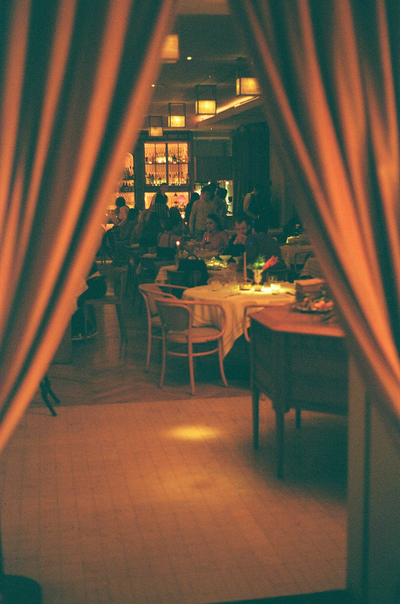

Tap, Hover or Tab to see what others are saying about us!
"Award-Winning Service"
"Unmatched Old-Fashioneds"
"Mouth-Watering Entrees"
What are we all about?
Welcome to The Wisco Club, you're premiere desination for evenings out with friends and family. We keep things simple and provide the classic high-quality experience that you've come to expect from the Wisconsin Supper Club name.
When you're here, you're family, and we treat everyone as such at The Wisco Club. Doesn't matter where your work days bring you to us from we are excited to make you feel the satisfaction of a job well done.

What are you waiting for? Aren't your taste buds on fire? Head over tonight to our main location!
ATTN: Reservations1222 Main St.
Baraboo, WI 55555
Phone: (608)999-3333